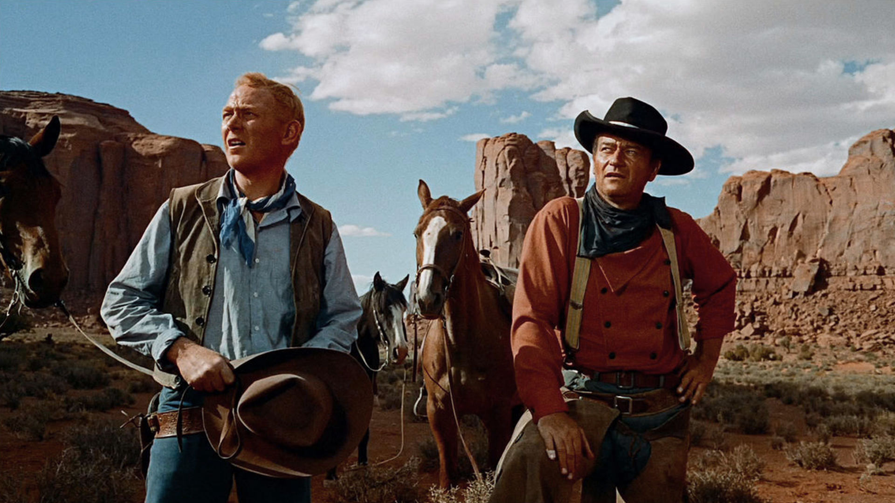
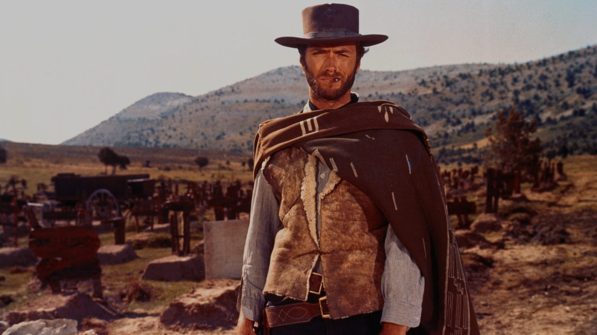
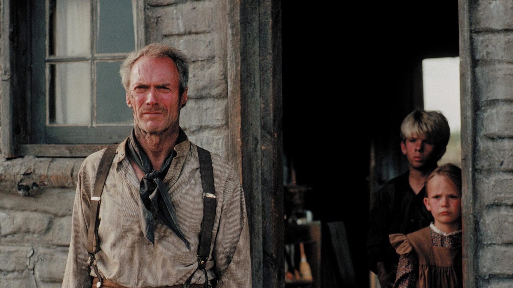
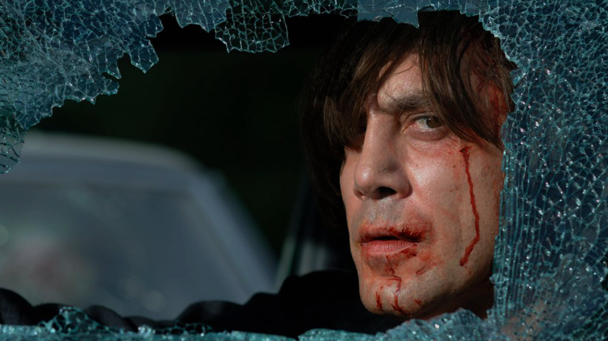
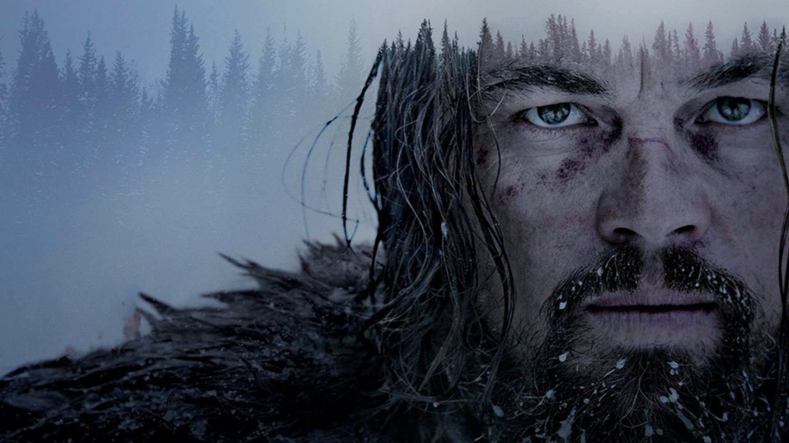

در این مقاله به معرفی چند تا از بهترین فیلم های وسترن پرداختهایم. از وسترنهای کلاسیک تا وسترنهای بازنگرانه و شهری جدید.
وسترن با خود سینما آغاز میشود و قدمتی به اندازهی کل تاریخ این هنر دارد. این گونهی سینمایی کموبیش با پایان غرب قدیم در اوایل قرن بیستم آغاز شد و تا به امروز نیز ادامه یافته است. وسترنها در دوران صامت رشد کردند و بعد از اینکه سینما وارد دوران ناطق خود شد به محبوبیت فراوانی دست یافتند. این ژانر که در نوع کلاسیک و سنتیاش در مرزهای آمریکا اتفاق میافتد و با کلانترها، سرخپوستان، گاوچرانها، جایزهبگیران و یاغیها سرکار دارد و به دنبال مضامینی مثل انتقام، عدالت، تاریخ ملی، فردگرایی و... میرود، از اواخر دهه ۱۹۴۰ تا ۱۹۵۰ عصر طلایی خودش را طی کرد، هرچند که دهههای ۱۹۳۰ تا ۱۹۶۰ دوران پرباری برای وسترنها بود. این ژانر که گونهای تعیینکننده در صنعت فیلم آمریکا است، بعد از گذشت چند دهه وارد دوران افول خود شد. اما از آنجائیکه وسترن ژانری حیاتی برای سینمای آمریکا بود، کمکم سروکلهی ضدوسترنها پیدا شدند. ضدوسترنها، وسترن را دوباره از نوع اختراع کردند و در دورانی که این ژانر محبوبیت خود را از دست داده بود، جانی دوباره به این گونهی سینمایی بخشیدند. وسترن اسپاگتی، وسترن اسیدی، وسترن بازنگرانه و تجدیدنظرطلب، وسترن استرالیایی، نئووسترنها و غیره گونههایی هستند که برای حیات این ژانر، عناصری از وسترن کلاسیک را درهم ریخته و قواعد جدیدی را وضع کردند. حال ما در این مقاله به بررسی برخی از فیلمهای مهم این ژانر اعم از وسترنها و ضدوسترنها پرداختهایم.
خلاصه داستان: ایتان که بعد از مدتها از جنگ برمیگردد، تصمیم میگیرد که زندگی عادی خود را دوباره آغاز کند. اما در همین هنگام سرخپوستها به خانوادهی او حمله میکنند و دختری را میدزدند. حال ایتان برای پیدا کردن این عضو خانواده دوباره راهی صحرا میشود.
جویندگان، وسترنی کلاسیک و حماسی است که براساس رمانی بههمین نام از آلن لو می ساخته شده است. The Searchers، یک موفقیت بزرگ در گیشه را رقم زد و از زمان اکراناش تا اکنون بهعنوان یک شاهکار و یکی از بزرگترین و تاثیرگذارترین فیلمهای ساخته شده، شناخته میشود. این فیلم بهعنوان بهترین وسترن کلاسیک آمریکایی تمام دوران معرفی شد و در فهرست ۱۰۰ فیلم برتر آمریکایی همهی زمانها قرار گرفت. در سال ۱۹۸۹ این فیلم بهدلیل انگیزههای فرهنگی، تاریخی و زیباییشناختی مهم تلقی شد و کتابخانهی کنگره، فیلم را برای ثبت در فهرست ملی فیلم انتخاب کرد. موضوع اصلی جویندگان، نگرش تاریخی مهاجران سفیدپوست نسبت به بومیان آمریکایی است. راجر ایبرت دربارهی فورد و جویندگاناش مینویسد: او تلاش میکرده تا نسلکشی و نژادپرستی را توجیه کند و سیاستهای ضدسرخپوستی را ترویج دهد. هرچند که فورد در ضدوسترناش یعنی فیلم پاییز قبیلهی شاین (Cheyenne Autumn) سعی کرد تا حدی این اتهامات را از خودش دور سازد. جان وین در این فیلم یکی از بهترین بازیهای خود را ارائه میدهد و فورد نیز با قدرتی تمام کارکتری اسطورهای را از دنیای غرب وحشی پرداخت میکند. The Searchers، فیلمی است جاودانه که هم شخصیتهایی منحصر بفرد را دارد و هم تصویری دقیق از یک وسترن کلاسیک را بهنمایش میکشد.
خلاصه داستان: در هر سه فیلم مردی با داستانهای متفاوتی حضور دارد و به دنبال سرنوشت خودش میرود.
سهگانه دلار که با نام سهگانه مرد بدون نام نیز شناخته میشود، متشکل از سه فیلم به خاطر یک مشت دلار، به خاطر یک مشت دلار بیشتر و خوب، بد، زشت است که تاثیر بسزایی را روی ماندگاری ژانر وسترن داشتند. اولین قسمت این سهگانهی وسترن اسپاگتی، به خاطر یک مشت دلار است که لئونه در سال ۱۹۶۴ آن را با الهام از فیلم یوجیمبوی (Yojimo) کوروساوا ساخت. توهو کمپانی سازندهی یوجیمبو از لئونه شکایت کرد و منتقدان ایتالیایی برخلاف منتقدان آمریکایی در ابتدا نقدهایی منفی به اثر وارد کردند. لئونه سال بعد به خاطر یک مشت دلار بیشتر را ساخت که نسبت به فیلم اول موفقیت بیشتری را بهدست آورد و به فروش خوبی هم در گیشه رسید. این فیلم اکنون نیز بهعنوان یکی از بهترینهای وسترن اسپاگتی شناخته میشود. این سهگانه در سال ۱۹۶۶ با ساخت خوب، بد، زشت به اوج خودش رسید و باعث شد که سینمای وسترن اسپاگتی به محبوبیت فراوانی در دنیا برسد. این فیلم یک موفقیت تجاری خوب را در باکس آفیس رقم زد و باعث شد که مدتی پس از اکران منتقدان اثر را تحسین کنند. خوب، بد، زشت اوج فیلمهای این سهگانه است چراکه هم ایدههای ضدجنگ را بهتصویر میکشد و هم به یک ساختارشکنی علیه وسترن کلاسیک و غرب میرسد. به عقیدهی تارانتینو این فیلم بزرگترین دستاورد تاریخ سینمای اوپا است و ورایتی نیز از آن بهعنوان یکی از ۵۰ فیلم برتر تمام دوران نام برده است. کلینت ایستوود که پیش از آشنایی با لئونه در سینمای ایتالیا بازی کرده بود با این فیلمها به شهرتی ماندگار رسید و حالا تماشاگران این گونهی سینمایی، ایستوود را نمادی از دنیای وسترن میدانند. موسیقی موریکونه در این فیلمها عنصر جذاب و ماندگار دیگری است که همیشه تماشاگران را به یاد وسترنهای اسپاگتی میاندازد. این سه فیلم یکی از جذابترین، تحسینشدهترین و ماندگارترین فیلمهای دنبالهدار تاریخ سینما هستند.
خلاصه داستان: در ایالت وایومینگ در غرب وحشی دو هفتتیرکش زنی را مورد آزار و اذیت قرار میدهند و محاکمه نمیشوند. ویل قانونشکن بازنشستهای که توبه کرده و حالا زندگی آرامی دارد، با اکراه ماموریت انتقام از این دو کابوی را میپذیرد.
Unforgiven، وسترنی بازنگرانه است که با فروش بالای خود توانست موفقیت فوقالعادهای را در باکس آفیس بهدست آورد. ایستوود زمانی این فیلم را ساخت که دورهی وسترنرها تمام شده بود و او میبایست برای جذب مخاطباش دست به تغییر قراردادهای ژانریک میزند. او بهسراغ وسترن کلاسیک رفت و با وارونه کردن استعارههای این ژانر فیلم خودش را ساخت. نابخشوده قالب قهرمان وسترن کلاسیک را تغییر میدهد و روایت متفاوتتری را پیش میگیرد. به عقیدهی منتقدان ایستوود زندگی خودش را در این اثر منعکس کرده و با پرداخت عناصری در سبک بصری و روایی، گذر دورانی که خود نمایندهاش است را بهتصویر کشیده است. نابخشوده، یک مراقبهی اخلاقی با شخصیتهایی است که گاهی به دلایل درست دست به اعمال وحشتنااک میزنند و گاهی نیز بدون هیچ دلیلی مرتکب جنایت میشوند. این فیلم در دوره جوایز اسکار نامزد ۹ جایزه شد که در این بین ۴ اسکار را برای بهترین فیلم، بهترین کارگردانی، بهترین تدوین و بهترین بازیگری مکمل مرد بهدست آورد. ایستوود همچنین در سری جوایز گلدن گلوب توانست جایزه بهترین کارگردانی را از آن خود کند. Unforgiven بعد از دو فیلم سیمارون و با گرگها میرقصد، سومین وسترنی بود که توانست جایزهی بهترین فیلم اسکار را ببرد. کتابخانهی کنگره نیز این فیلم را در فهرست ملی فیلم آمریکا قرار داد و از طرف بنیاد فیلم نیز عنوان یکی از ۱۰ فیلم برتر وسترن تمام دوران را به خود اختصاص داد.
خلاصه داستان: ماس بهطور اتفاقی با جسدهایی بهجای مانده از یک درگیری بین گروههای مواد مخدر برخورد میکند. او مقدار زیادی پول را در آنجا پیدا مییابد و با خود میبرد. چیگور که آدمکشی حرفهایست اجیر میشود تا پولها را برگرداند.
No Country for Old Men، ضد وسترنی جنایی است که براساس داستانی بههمین نام و نوشتهی کورمک مک کارتی ساخته شده است. این فیلم برای اولین بار در جشنواره کن بهنمایش درآمد و نامزد دریافت نخل طلای جشنواره شد. No Country for Old Men تحسین منتقدان را با خود همراه کرد و در باکس آفیس به فروش بسیار فوقالعادهای رسید. این فیلم در هشتادمین دوره جوایز اسکار نامزد ۸ جایزه شد و توانست جایزهی بهترین فیلم، بهترین کارگردانی، بهترین فیلمنامه اقتباسی و بهترین بازیگر مکمل نقش مرد را ببرد. جائی برای پیرمردها نیست در سال ۲۰۰۷ بهعنوان یکی از فیلمهای برتر دههی ۲۰۰۰ انتخاب شد و مجله تایم آن را بهترین اثر در کارنامهی برادران کوئن دانست. No Country for Old Men، داستانی هولناک از جنایت و خشونت است که در بستری با ایدههایی از تفکرات پوچگرایانه، بدبینانه، شانس، اراده، تقدیر و سرنوشت پیش میرود. این فیلم به عقیدهی مجلهی امپایر هم یک وسترن است و هم وسترن نیست و هم میتواند در ژانرها و دیگر گونههای سینمایی جای بگیرد و هم نگیرد. No Country for Old Men، درواقع انتظارات ژانر را زیر و رو میکند و الهمانهای یک وسترن کلاسیک و اسپاگتی را به نفع خودش تغییر میدهد. فیلم روایتهای قدیمی غرب وحشی را با جنایات مدرن در تضاد قرار میدهد و قهرمانان در بهترین حالت باید فرار کنند. این نمایش بیش از هر فیلم دیگری در سال ۲۰۰۷ عنوان و افتخار کسب کرد.
خلاصه داستان: گلس که بههمراه گروهی شکارچی برای جمعآوری خز و پوست راهی مناطق شکار شده است، توسط یک خرس گریزلی بهشدت آسیب میبیند و توان حرکتیاش را از دست میدهد. او در این شرایط از همهی مهارتهایش برای زنده ماندن استفاده میکند.
The Revenant، وسترنی بازنگرانه و حماسی است و براساس رمان بازگشته اثر مایکل پونک که بیانگر تجربیات یک مرزنشین در سال ۱۸۲۳ است، ساخته شد. بازگشته پس از انتشار تحسین جهانی منتقدان را با خود همراه کرد و در باکس آفیس نیز به موفقیت چشمگیری رسید. این فیلم بهدلیل سختگیریهای اینیاریتو و شرایط بد فیلمبرداری، یکی از فیلمهایی است که پروسهی تولید سختی را از سر رد کرده و درگیریهای متعددی را نیز بین عوامل و تولیدکنندگان بهوجود آورده است. The Revenant، در هشتاد و هشتمین دوره جوایز اسکار به نامزدی ۱۲ رشته رسید و ایناریتو برای دومین بار، لوبزکی برای سومین برندهی بهترین کارگردانی و بهترین فیلمبرداری شدند. دی کاپریو هم پس از مدتها اولین جایزهی بازیگری خود را از اسکار گرفت و تام هاردی هم به نامزدی بهترین نقش مکمل مرد رسید. در هفتاد و سومین دوره جوایز گلدن گلوب نیز این فیلم برندهی سه جایزه بهترین فیلم درام، بهترین کارگردانی و بهترین بازیگر مرد شد. بازگشته تجربهای جذاب از تلاش برای بقاست، فیلمی که با سبک بصری چشمنوازش، فضاسازی هوشمندانهای را برای قصهی فیلم خلق کرده و به مخاطب حس اضطراب و تعلیق را تزریق میکند. The Revenant، حاوی الهمانهای آشنایی مثل انتقام، بقای انسان در محیط، مردمان بومی، مردان خشن اسلحه بدست از دنیای وسترن کلاسیک است که با پیرنگی برگرفته از برف و یخ و دوستی با مردمان بومی درآمیخته شده است.